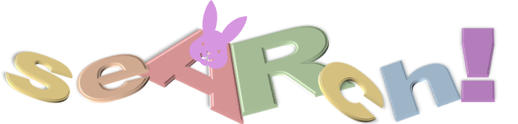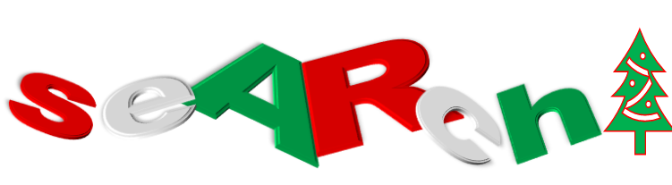
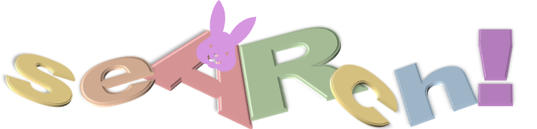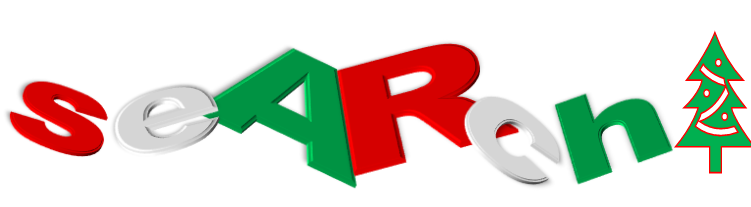
Very Old logos from years ago!
Here are classic logos from seARch!s early days!
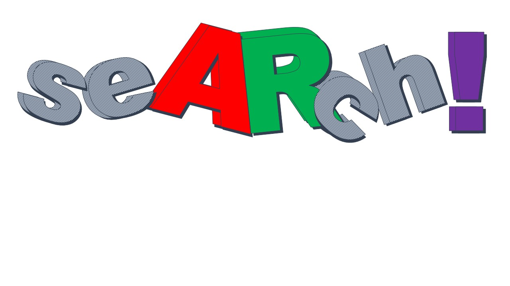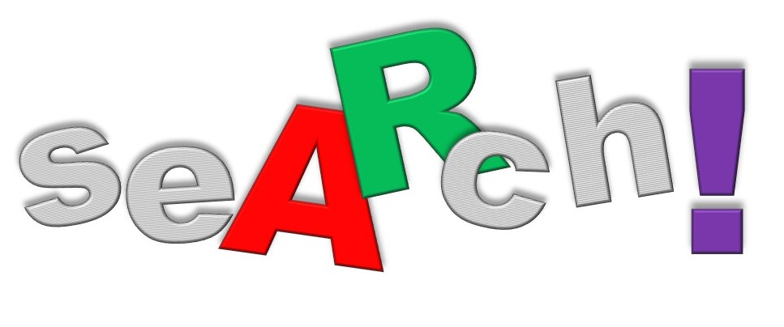
WAIT THERES MORE!
Who created seARch!
seARch! was coded by squ:rre/ com as a reseARch! project in 2021
What is seARch!
seARch! is a simple seARch engine that allows you to seARch the net you can save the result of seARch!, by clicking export as any filetype is listed e.g JSON the click DOWNLOAD IT!
Privacy and data storage
seARch does not store you history or seARches!, we belive in privacy not money or adverts!, A users privacy is worth more than any advert shown or ever listed on seARch!
Logo's
seARch! will have custom logo's on very important days e.g easter or christmas! Can you guess which logo is based on each event?
Very Old logos from years ago! Here are classic logos from seARch!s early days! 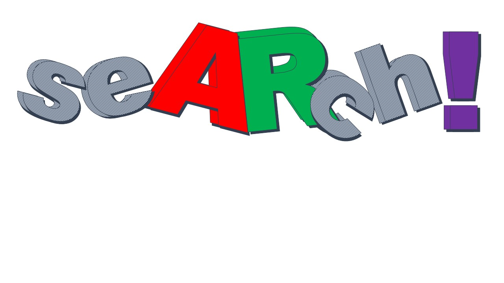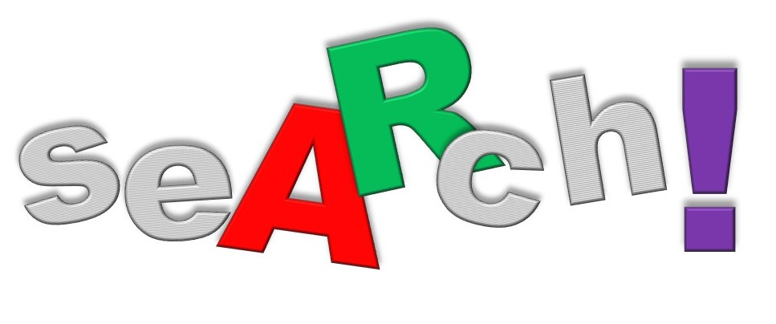 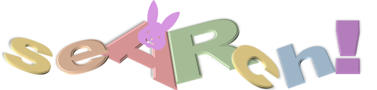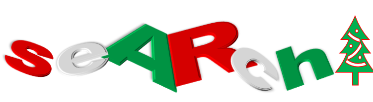
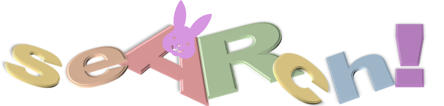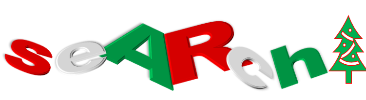